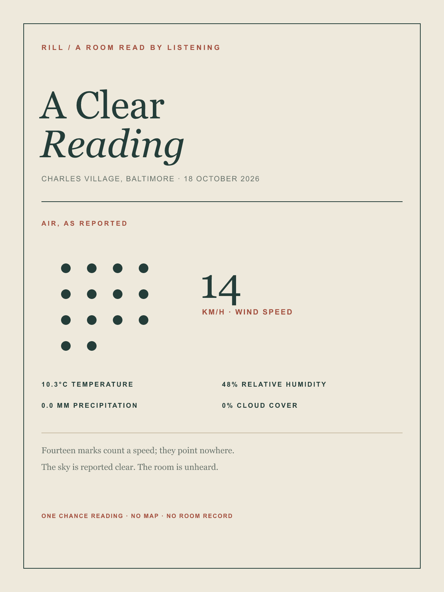

The reading
Temperature: 10.3°C. Relative humidity: 48%. Precipitation: 0.0 mm. Cloud cover: 0%. Wind speed: 14 km/h.
Fourteen marks count a speed; they point nowhere. The reading gives outdoor conditions at one moment, not a place's enduring character.


This is a digital composition from a chance weather report. It is not a wind-direction diagram, sound recording, room response, or account of anyone's experience. No physical print was made.